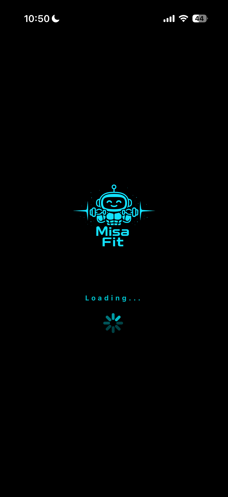
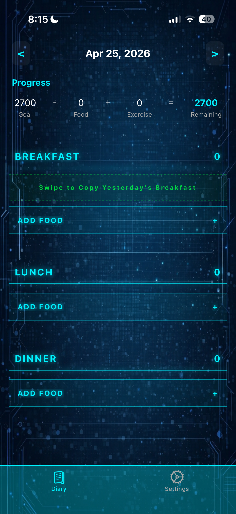
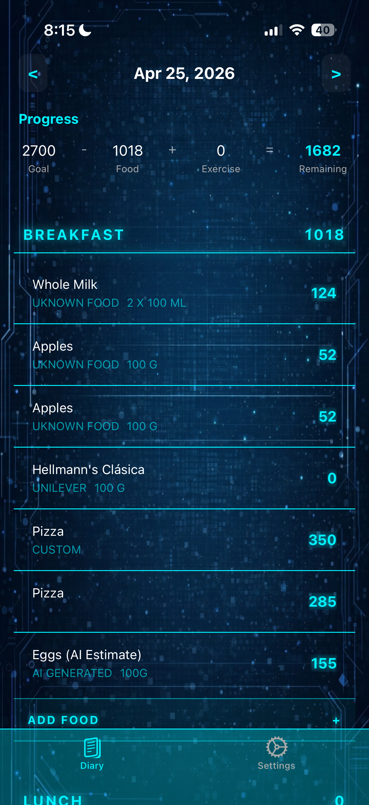
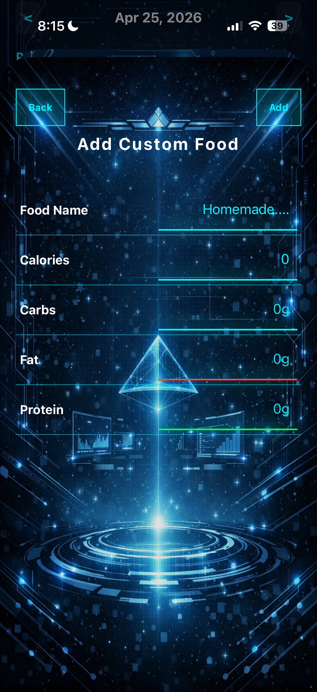
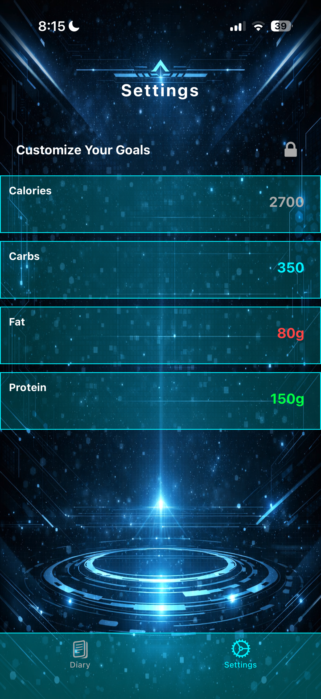
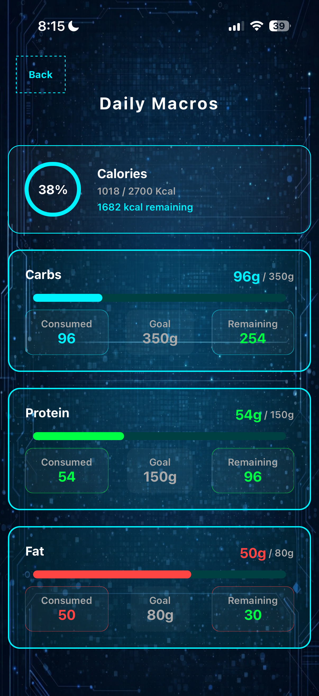
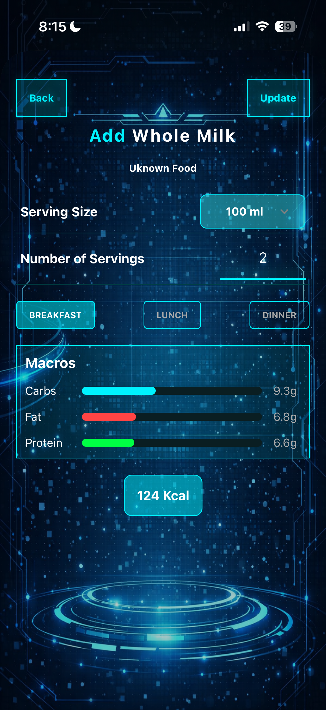
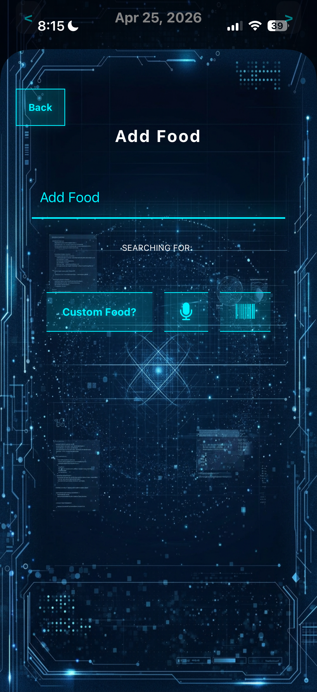

4. MisaFit
1. What does the tool do?
MisaFit is a mobile application featuring a futuristic, sci-fi HUD interface designed for macronutrient and calorie tracking to help users hit their fitness goals.
2. Why I built it:
As a frequent user of standard tracking apps like MyFitnessPal, I wanted access to premium features like voice logging, fast barcode scanning, and quick-add macros. Instead of paying for a subscription, I decided to build my own ecosystem. This project was born out of a desire to own my health data, push my technical limits by learning mobile development from scratch, and actively reinforce my identity as a builder who creates solutions rather than just consuming them.
3. How it works:
-
For the user:
- Multi-Modal Logging: Users can log food via a traditional search bar, by adding their own custom calories and macros, by scanning a barcode using the native device camera, by asking AI to estimate the calories of a certain food, or by speaking naturally into the microphone.
- Dynamic Math Engine: Users can select custom quantities and units of measurement (grams, ounces, scoops, slices) while the UI instantly recalculates the macros in real-time.
- Daily & Historical Tracking: Features an interactive calendar and a dashboard that tracks daily caloric and macronutrient progress against customizable user goals.
-
Technical Architecture & Orchestration:
- The application is built on React Native and TypeScript, utilizing a complex system of API orchestration to route user intents to the correct backend service:
- FatSecret API: Powers the primary text search and nutritional database.
- OpenFoodFacts API: Handles the native camera barcode scanning feature.
- OpenAI Whisper: Processes audio files for highly accurate speech-to-text transcription.
- OpenAI GPT-4o-mini: Handles the analytical estimation for custom food entries.
- Memory Management & Asset Preloading: To create a highly immersive aesthetic, I generated custom sci-fi backgrounds using AI. To prevent "white flashes" during screen transitions:
- Pre-Fetching to RAM: Upon opening the app, a custom boot screen holds the user while
Asset.loadAsyncmanually pre-loads all background files directly into the device's temporary memory (RAM). - Hardware-Accelerated Rendering: I utilized the
expo-imagelibrary wrapping a root container withStyleSheet.absoluteFillObject. By enforcing amemory-diskcache policy, the application instantly retrieves the pre-loaded images from RAM, resulting in zero-latency screen transitions. - Offline-first Architecture & Local Persistence: To guarantee a seamless user experience regardless of network connectivity, the application caches all historical meal data locally using
@react-native-async-storage/async-storage. - Reactive Background Saving: Instead of manually triggering save commands on UI buttons, I engineered a reactive
useEffecthook that constantly monitors the global state. Whenever the user updates a goal or logs a food, the app automatically serializes the complex arrays into strings (JSON.stringify) and writes them to the local disk in the background. - Asynchronous State Hydration: Upon app launch, an initialization sequence reads the persistent storage, parses the data back into usable objects (
JSON.parse), and hydrates the app’s context. Because this system strictly utilizes asynchronous promises (async/await), the disk I/O operations never block the main thread.
-
For the user:
4. Technical Challenges:
-
Parsing Unstructured API Data: Regular Expressions (Regex)
The FatSecret API does not return macros as cleanly separated JSON numbers. Instead, it returns a single, unstructured string of text (e.g., "Per 100g - Calories: 250kcal | Fat: 10g | Carbs: 30g"). I engineered a series of Regular Expressions (Regex) with Capture Groups to parse the string, ignore unpredictable spacing, and capture only the mathematical values.// 1. Define the Regex patterns using Capture Groups const calMatch = foodDescription.match(/Calories:\s*([\d.]+)\s*kcal/i); const fatMatch = foodDescription.match(/Fat:\s*([\d.]+)\s*g/i); const servingMatch = foodDescription.match(/Per\s*([\d.]+)\s*([a-zA-Z]+)/i); // 2. Extract the numbers safely, falling back to 0 if API omitted them return { baseCalories: calMatch ? parseFloat(calMatch[1]) : 0, baseFat: fatMatch ? parseFloat(fatMatch[1]) : 0, servingSize: servingMatch ? parseFloat(servingMatch[1]) : 100, servingName: servingMatch ? servingMatch[2] : 'g' }; -
Data Normalization & Dynamic Math Engine
Once the string was parsed, the next hurdle was normalizing highly unpredictable unit types. A single food item might return its serving size as “1 slice,” “30 grams,” or “1 scoop.” I engineered a custom math hook (useFoodSettings) that converts all base measurements to a standardized gram weight, utilizing a "fallback multiplier" to safely estimate weight if the API failed to provide it. This allowed the interface to dynamically scale proteins, fats, and carbs safely without undefined data crashing the app. -
Global State Management & Prop Drilling
In React Native, applications are structured like a multi-story house. Modals float "above" the main dashboard. Passing data manually down the component tree (a localized anti-pattern known as “Prop Drilling”) creates brittle, heavily coupled code. I solved this by building an "intercom system" using the React Context API.
I applied this exact same pattern to build a// The Global Network (The Intercom) const FoodContext = createContext<FoodContextType | undefined>(undefined); export function FoodProvider({ children }) { const [allMeals, setAllMeals] = useState<Meal[]>([]); // Centralized CRUD Operations const addMeal = (food: Meal) => setAllMeals(prev => [...prev, food]); const deleteMeal = (id: string) => setAllMeals(prev => prev.filter(m => m.id !== id)); const updateMeal = (updatedFood: Meal) => setAllMeals(prev => prev.map(m => m.id === updatedFood.id ? updatedFood : m)); return( // Broadcasting the state and the functions to the entire app <FoodContext.Provider value={{ allMeals, addMeal, deleteMeal, updateMeal }}> {children} </FoodContext.Provider> ); }SoundContextat the absolute root of the app, creating a persistent global audio player that allowed UI sound effects to run smoothly across screen transitions without cutting off. -
Vendor Evaluation & API Orchestration
To solve the "cold start" database problem, I approached API integration iteratively. I began by mocking a local database, then tested OpenFoodFacts and the USDA API before strategically mapping APIs to their strengths: FatSecret for text search, OpenFoodFacts for barcodes, and OpenAI for voice transcription. I utilized AI (LLMs) as a pair-programming partner to rapidly engineer strict parsing functions for the wildly different JSON response formats.
-
Parsing Unstructured API Data: Regular Expressions (Regex)
5. What I learned:
- Mobile Architecture: Transitioning from web to mobile, I learned how to manage complex component lifecycles, build native layouts, implement swipeable UI actions, and compile builds using Expo Go.
- State & Data Management: I mastered using strict TypeScript interfaces to handle messy API arrays and learned how to safely manage complex, interconnected state logic across multiple screens and storage layers.
- System Integration: I learned the real-world challenges of connecting multiple distinct APIs, handling asynchronous background fetch requests, and orchestrating different endpoints into one seamless, fast user experience.
- Component-Driven Refactoring: I mastered the art of refactoring massive, cluttered files into clean, reusable UI components and custom React hooks, making the codebase modular and readable.
To conquer the steep learning curve of React Native, I practiced "Rubber Duck Debugging"—verbally explaining my code line-by-line out loud—and forced myself to manually rewrite complex logic until the syntax became muscle memory. By pushing through the initial friction, I transformed my understanding of code from scattered syntax into a cohesive model of mobile architecture.
6. Screenshots







